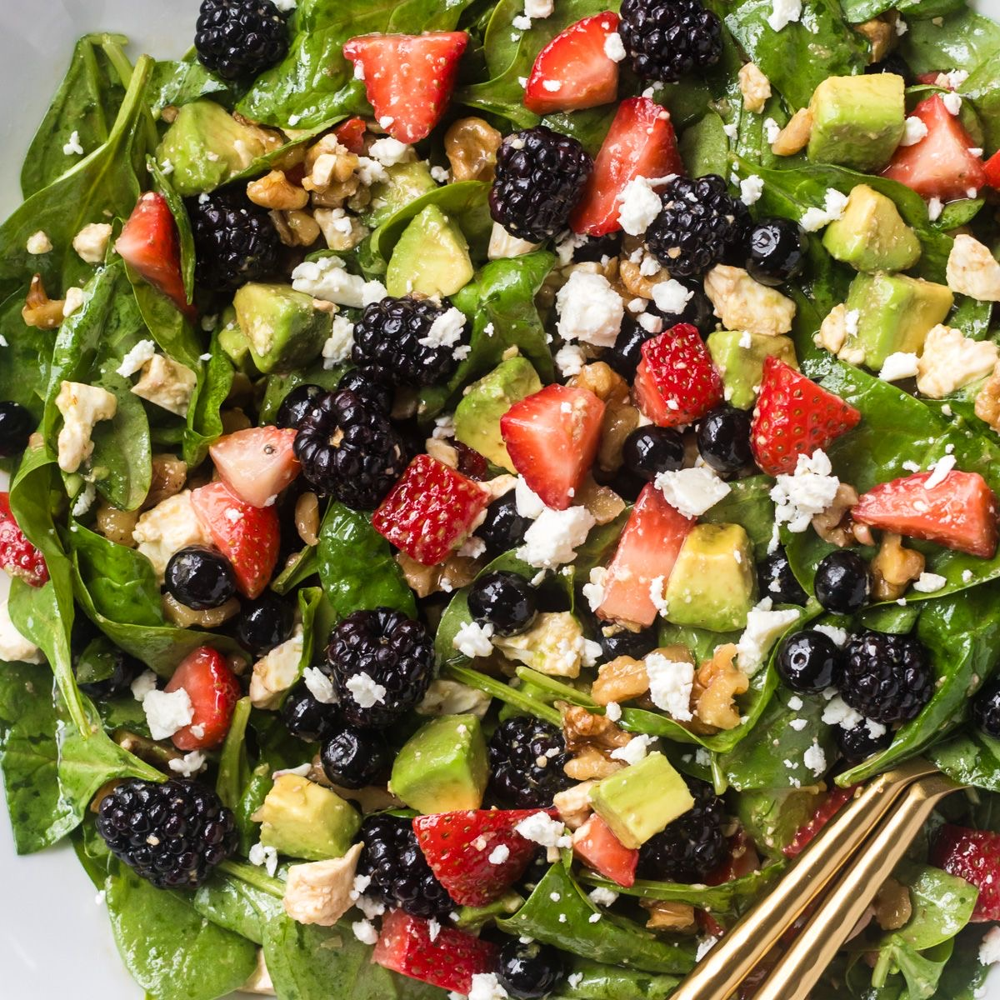

Kiri's Kitchen is a cozy family-owned restaurant nestled in the heart of San Francisco. Established in 2015, it has been serving a fusion of traditional and modern American cuisines, providing a warm, welcoming ambiance that mirrors the comfort found in a family kitchen. The restaurant values fresh, locally sourced ingredients, community engagement, and providing a delightful dining experience that goes beyond just the meal. Kiri believes in creating a place where every diner feels at home while enjoying hearty, delicious meals.
Menu 📝
Appetizers 🍟
Vegetable Spring Rolls-$6.95 Crispy rolls that are filled with fresh
veggies and served with a sweet chili dip
(Available during summer)Summer Berry Salad-$10.95 Mixed greens with fresh berries, goat cheese, and a raspberry vinaigrette

(https://pin.it/5h5OB9SrD)
Reviews ⭐
Sara L left a 5-star review and said "The atmosphere is so warm and inviting, and the food is absolutely delicious! The grilled salmon is a must-try!"
Mike D left a 4-star review and remarked, "I love the variety in the menu. The seasonal specials keep me coming back. Kiri's Kitchen has become our weekly dining spot."
Emma R. left a 5-star review and attested, "The apple pie is the best I've ever had. It's the perfect blend of sweet and tart, and the crust is just right. A cozy place with friendly staff!"